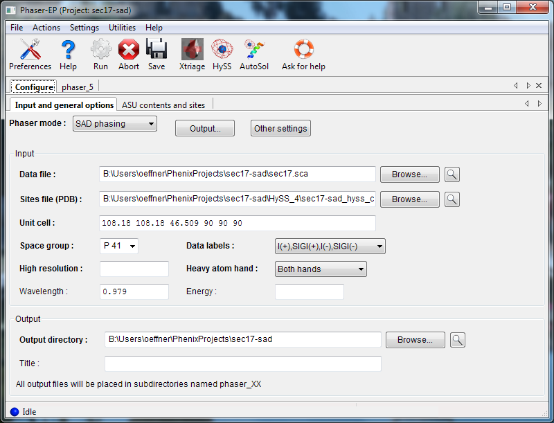
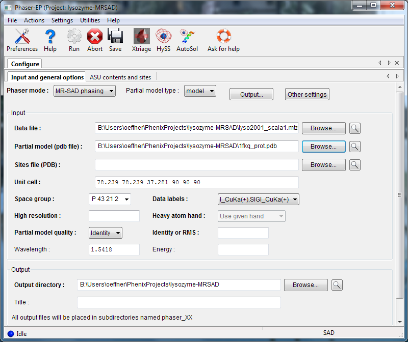

Since the two Phaser GUIs use a common base, much of the experimental phasing interface is similar to the Phaser-MR GUI. This section only covers features unique to SAD phasing, including instructions for MR-SAD.
Phaser is used internally in the AutoSol wizard, which automates a complete experimental phasing pipeline including heavy atom search, phasing, density modification, and preliminary model-building. (It is also capable of running MR-SAD experiments.) For that reason, we recommend trying AutoSol first, and falling back to standalone Phaser for more difficult problems where finer control over parameters is required.
This document only covers configuration of the Phaser GUI; for a detailed explanation of the various terms and search procedures referenced here as well as interpretation of results, consult the documentation for AutoSol or Phaser, or the Phaser WIKI.
Phaser requires a reflections file (any format) containing anomalous data, and (for normal SAD mode) a file containing heavy atom sites, in either PDB or SHELX format. Either the wavelength or the energy used is also required. If you are using normal SAD mode, you may choose whether to use the given enantiomer ("hand") of the heavy-atom sites or the inverse or both.

To run an MR-SAD experiment, change the mode to "MR-SAD phasing", and enter a partial model (PDB file) and the expected variance from the actual structure (RMSD or percent identity). In MR-SAD, the chirality of the partial model restricts the sites to the given enantiomer. You could optionally provide a file containing heavy atom sites, but these are normally found by log-likelihood-gradient completion from the partial model; an advantage is that these sites are guaranteed to correspond to the same hand and origin as the partial model. Instead of a partial model specified with atoms, you can optionally provide an electron density map instead, by choosing "map" from the "Partial model type" pulldown.

The input for ASU contents is identical to the Phaser-MR GUI. Heavy atoms may be either standard elements from the periodic table, or cluster compounds such as tantalum bromide or tungsten clusters.
Depending on the choice of hand, Phaser will output one or two sets of files containing the heavy atom sites (PDB format) and phased reflections (MTZ), including map coefficients and Hendrickson-Lattman phase probability distributions (useful for refining with experimental phase restraints). This map is usually very noisy and difficult to interpret, and typically requires density modification to become useful.
- How do I tell Phaser to look for more anomalous scatterers? Click on the "Composition and sites" tab. A control at the bottom labeled "Enable substructure completion by log-likelihood gradient maps" turns on this feature (and is already on by default). However, Phaser also needs to be told what type of scatterers to look for. These can be entered into the "Scattering types" box either manually or by clicking the "Select scatterer type" button. You may enter as many of these as you think are present and ordered in your crystal - note however that at the wavelengths commonly used for macromolecular crystallography, some atom types may be difficult to distinguish (such as sulfur and chlorine).
- How do I phase a structure with tantalum bromide clusters in Phenix? This is possible, but not really optimal at present. Phaser has built-in support for Ta6Br12 clusters, which have the scatterer type "TX". These are represented as spherically-averaged scatterers, which are a better representation than conventional atoms but not as good as an oriented atomic model of the actual cluster. The output sites are represented as single TX pseudo-atoms.
- McCoy AJ, Grosse-Kunstleve RW, Adams PD, Winn Md, Storoni LC, Read RJ. Phaser crystallographic software. J. Appl. Cryst. (2007) 40:658-674.
- McCoy AJ, Storoni LC, Read RJ. Simple algorithm for a maximum-likelihood SAD function. Acta Cryst. (2004) D60:1220-8.